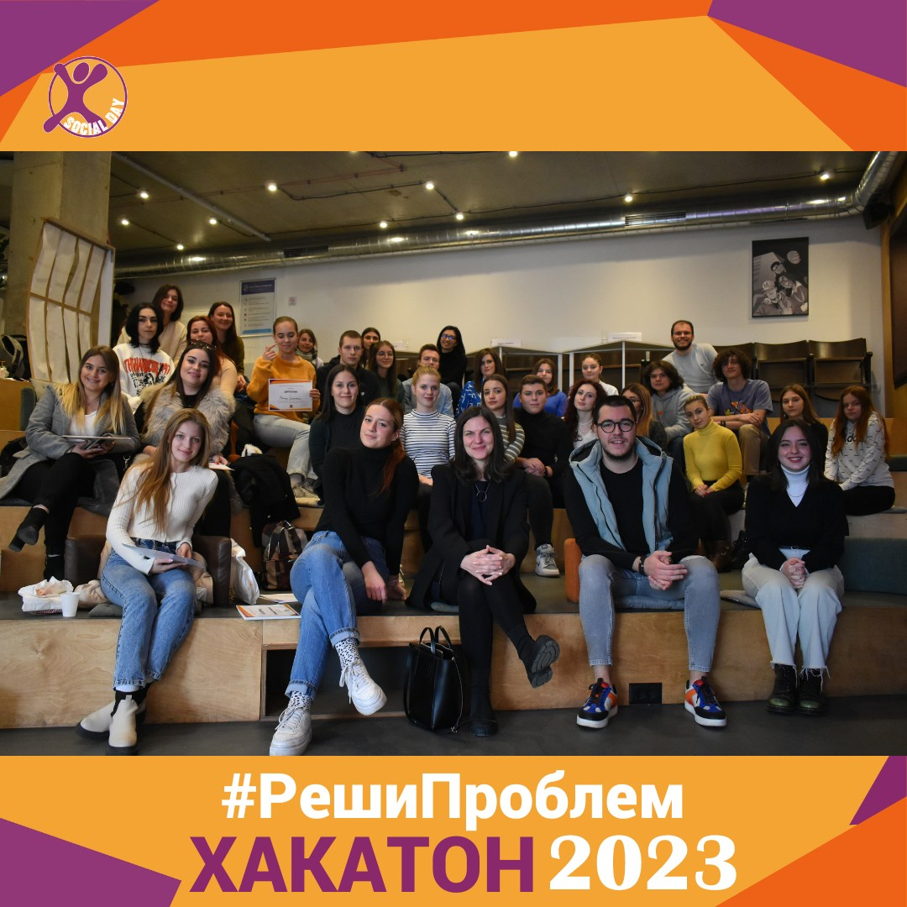
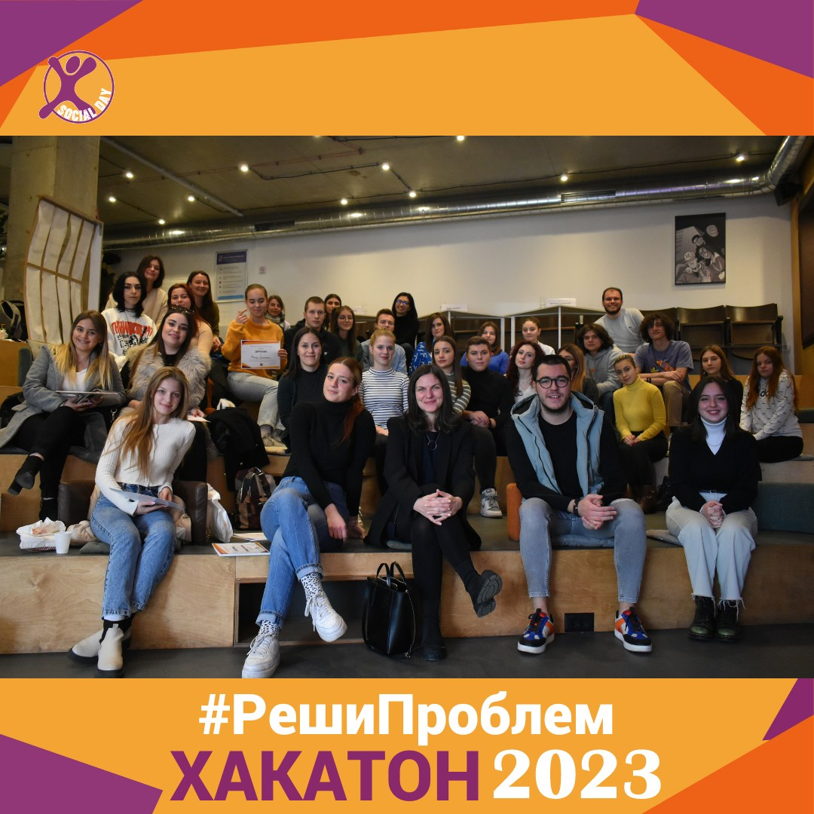
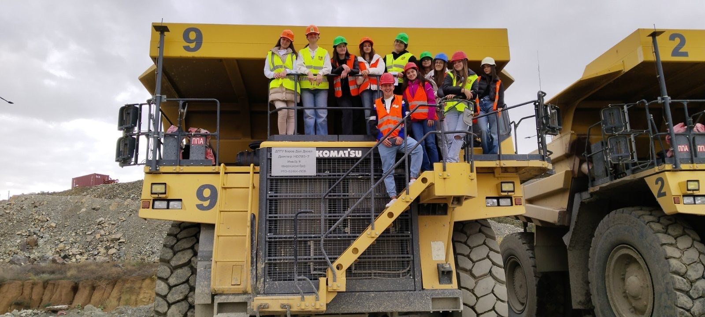
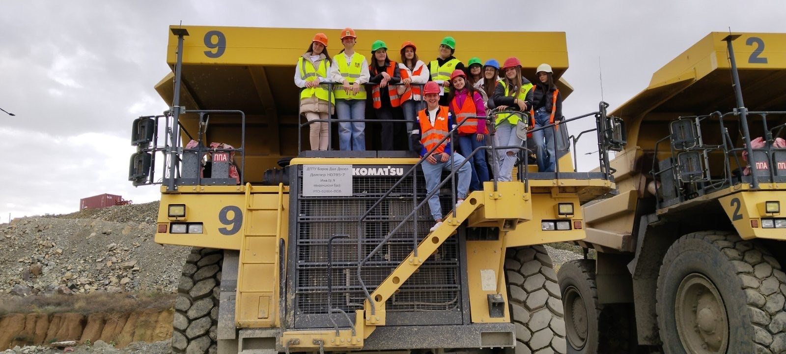
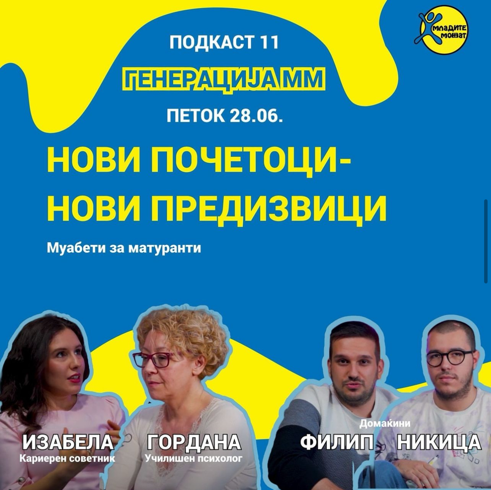
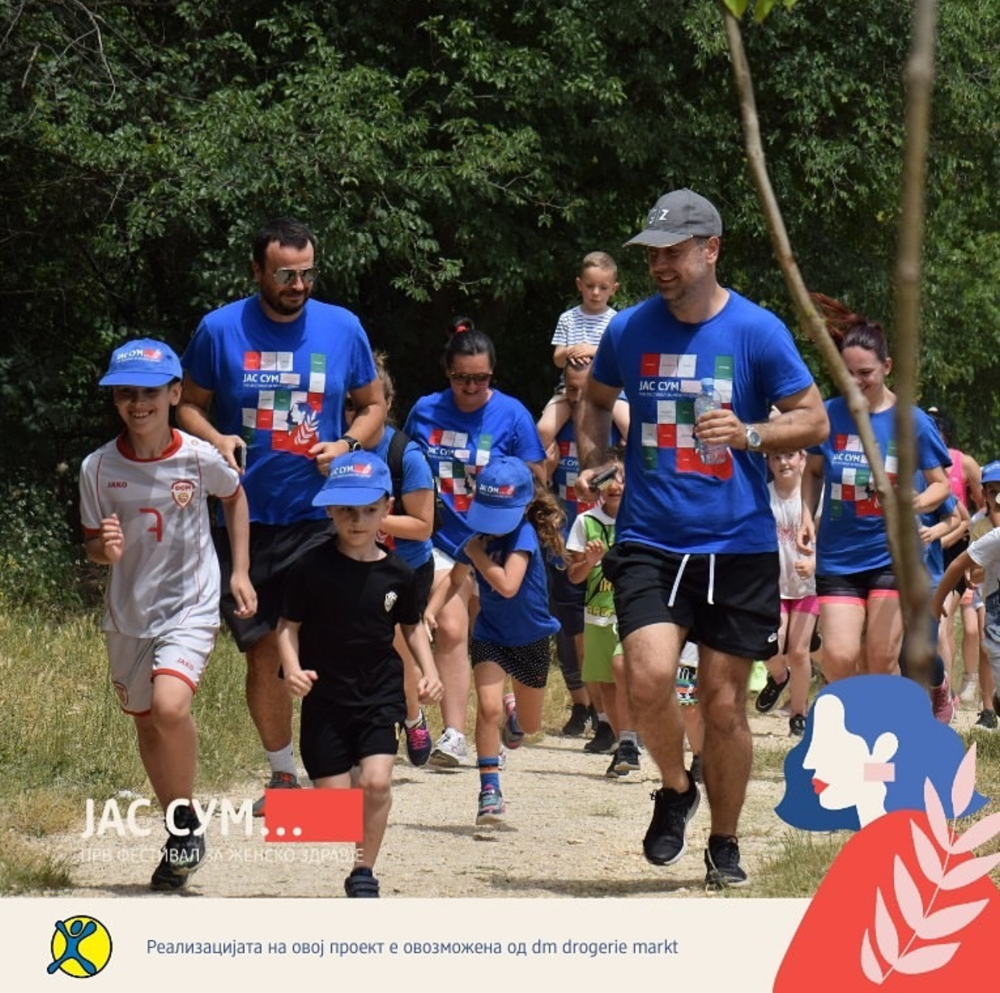
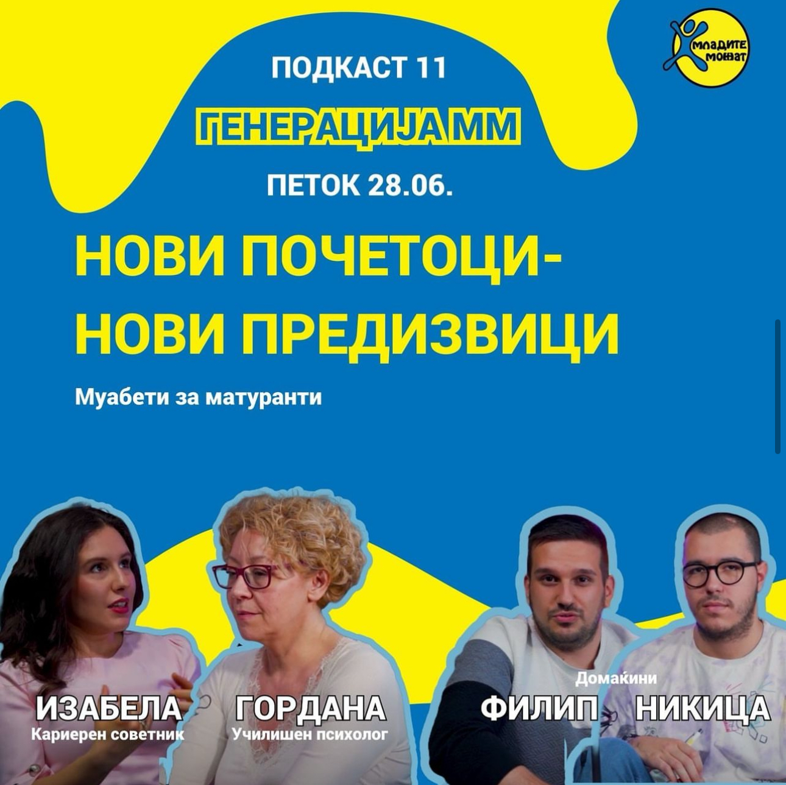
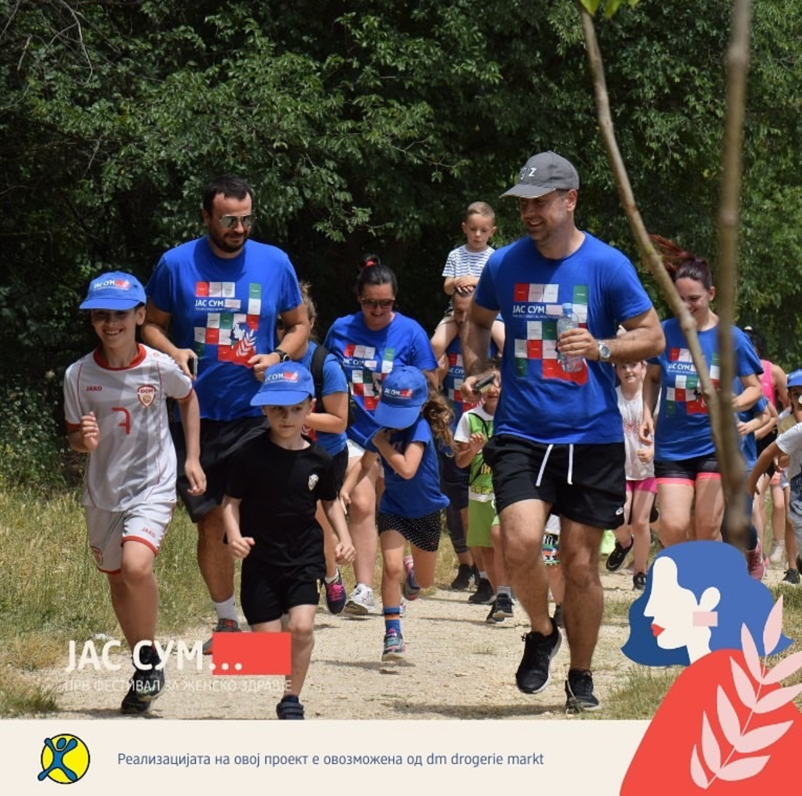

Кои сме ние?
Младите можат е здружение на граѓани формирано од млади за млади на 28мај, 2009 година. Оваа 2019г. ќе одбележи 10 години постоење, повеќе од 1000 млади вклучени директно во проекти, програми, настани и активности и повеќе од 20 активни членови кои секојдневно придонесуваат во растењето и успехот на организацијата, а со тоа и во правење на позитивни промени за нашата младина и нашата заедница.
Визија
Младите луѓе да земат активно учество во развојот на своите заедници и преку младински и социјален активизам, како моќни алатки за општествена промена, да одговорат на своите потреби во заедницата.
Мисија
Да им овозможиме на младите луѓе да станат активни, независни, способни и решителни граѓани кои веруваат дека можат самостојно или здружено да учевствуваат и влијаат во позитивните промени и развојот во општеството.
Искуства на младите што можат
"Благодарна сум што имав шанса да бидам дел од овој процес, тренинг кој не само што продре до јадрото на Тим Билдингот, туку овозможи сите учесници повеќе да дојдат во допир со себе си - за своите јаки страни, своите слаби страни, приоритети, желби, цели, а најважно од се' како да остават трага во општеството и како да го направат тоа во тим."
Eлена Пауноска, учесник на проектот "Process of change"
"Како младински работник постојано треба да ги следиш новите трендови на младите, да си запознаен со интересите кои ги имаат, да ги следиш новостите во светот и секако да ги информираш и нив за истите. Еден од предизвиците што ги има младинската работа денеска е како активностите што ги креираме за нив, но и тие што самите ги спроведуваат, да бидат одржливи, достапни и корисни за општеството."

Софија, учесник на проектот "Process of change"
"Како младински работник постојано треба да ги следиш новите трендови на младите, да си запознаен со интересите кои ги имаат, да ги следиш новостите во светот и секако да ги информираш и нив за истите. Еден од предизвиците што ги има младинската работа денеска е како активностите што ги креираме за нив, но и тие што самите ги спроведуваат, да бидат одржливи, достапни и корисни за општеството."
Софија, учесник на проектот "Process of change"
"Најинспиративниот момент е што низ новите искуства добиваш можност да сфатиш колку многу си научил од претходните, а во исто време да откриваш и уште колку многу имаш за учење."
Симона, искуство во Младите Можат
"Најинспиративниот момент е што низ новите искуства добиваш можност да сфатиш колку многу си научил од претходните, а во исто време да откриваш и уште колку многу имаш за учење."
Симона, искуство во Младите Можат
"Благодарна сум што имав шанса да бидам дел од овој процес, тренинг кој не само што продре до јадрото на Тим Билдингот, туку овозможи сите учесници повеќе да дојдат во допир со себе си - за своите јаки страни, своите слаби страни, приоритети, желби, цели, а најважно од се' како да остават трага во општеството и како да го направат тоа во тим."
Eлена Пауноска, учесник на проектот "Process of change"
Кои се нашите програми
Ментално здравје и развој

На членовите во програмата им се нууди платформа за личен развој, себеспознавање, себереализација и станување на најдобрата верзија од себеси.
Волонтерство и активизам

Служење во корист на заедницата, меѓусебно помагање и здружено делување насочено кон менување на светот како подобро место за живеење.
Развој на кариера

Процес на стекнување на лични вештини, постојано надоградување и учење, себепронаоѓање, развивање на најдобрата верзија од себеси.
Запознај го нашиот тим
Анита
Николовска
Извршен директор
Никица
Манџуковски
Програмски координатор за кариерен развој

Сања
Матовска
Координатор за администрација и финансии

Филип
Ивковски
Програмски координатор за ментално здравје
 

 


 


